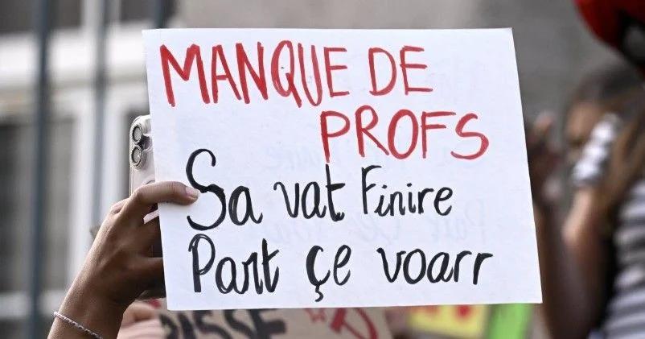

Publication du PCF 79
« Mobilisation lycéenne : la préfecture des Deux-Sèvres en pleine contradiction »
Date indiquée par Facebook · 7 octobre 2026
Extrait de la publication d’origine
Mobilisation lycéenne : La préfecture des Deux-Sèvres en pleine contradiction
La presse locale des Deux-Sèvres de ce jour relate que policiers et gendarmes assurent le maintien de l'ordre depuis le début de la mobilisation lycéenne. Ces derniers interviennent sous la houlette de la préfecture. "Nous sommes aussi garants du droit de tous à manifester" assure Tony Chesneau-Lloyd directeur de cabinet.
Pourtant le même Tony Chesneau-Lloyd a signé lundi quatre arrêtés au nom de la préfète, dont le principal interdit toute manifestation autour des lycées de Niort et dans une partie de l'hyper centre piétonnier jusqu'à vendredi 18h, esplanade de la place de la Brèche incluse.
Garant du droit fondamental à manifester mais en interdisant toute manifestation par un arrêté. Ce pouvoir n'est pas à une contradiction près.
Repères éditoriaux
Dans cette publication, nous revenons sur les propos du directeur de cabinet cités par La presse locale et sur les arrêtés qui restreignaient les manifestations autour des lycées de Niort et dans une partie du centre-ville. Nous y défendons le droit des lycéens de faire entendre leurs revendications.

Sources
Archive rouge · export Facebook · AR-0002-FB-00655
À lire aussi · Pourquoi nous avons relayé le communiqué du CRAP sur la mobilisation lycéenne